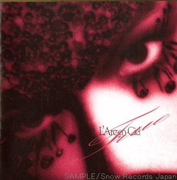

Dearest LoveL'Arc~en~Ciel |
 |
| Paroles: Hyde Composition: Tetsuya Arrangements: L'Arc~en~Ciel |
| Rōmaji 🎤 | Japonais 🎙 | Traduction 📖 |
|---|---|---|
|
Awaku irodarareta waraigoe ni afureteiru
Dearest love
Kuzurete shimau no ga amari ni hayasugite nani hitotsu kawaranai
Aa doushite kurushii hodo kokoro wa todaete yuku
Owari ga kuru no nante omowanai de kakenuketa ne
Setsunai hodo kizutsuku made kizutsuketeku mou nani mo wakaranai
Aa doushite aisuru hodo kokoro wa kowarete yuku |
淡く彩られた笑い声に溢れている
Dearest love
崩れてしまうのが余りに早すぎて何一つ変わらない
あぁ どうして苦しいほど心は途絶えてゆく
終りが来るのなんて思わないで駆け抜けたね
切ないほど傷つくまで傷つけてくもう何も分からない
あぁ どうして愛するほど心は壊れてゆく |
Débordant de rires sans joie,
Mon cher Amour,
Tout ceci n'est qu'une illusion qui s'effrite lentement.
Prisonniers par les mots que nous nous disions, mes yeux étaient captivés. Pourquoi mon cœur a-t-il raté un battement ?
Je continue à avancer sans jamais penser que la fin pourrait venir.
C'est à la fois doux et amer, et nous continuons à nous blesser l'un et l'autre jusqu'à ce que l'on soit meurtri, sans rien y comprendre.
Ah, pourquoi mon cœur se brise t-il, alors que je t'aime de plus en plus ? |